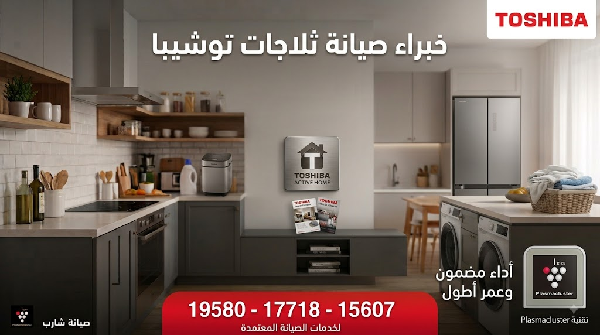
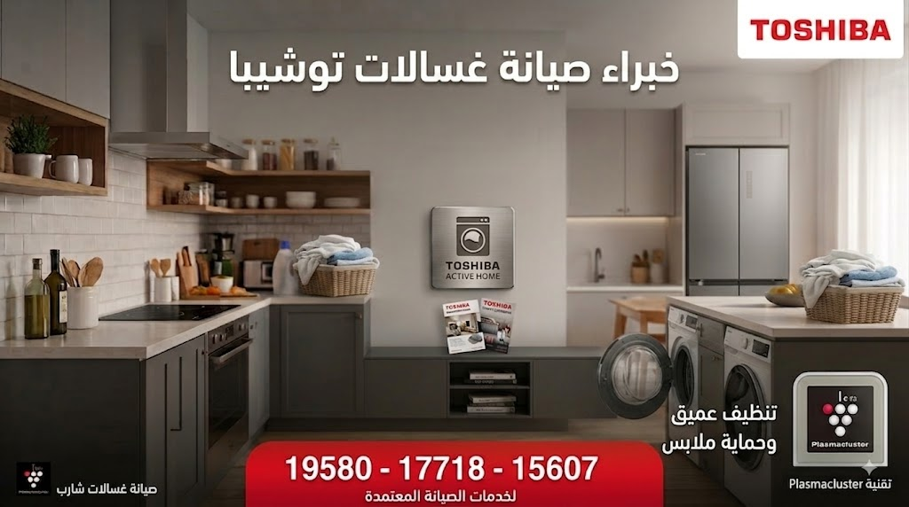
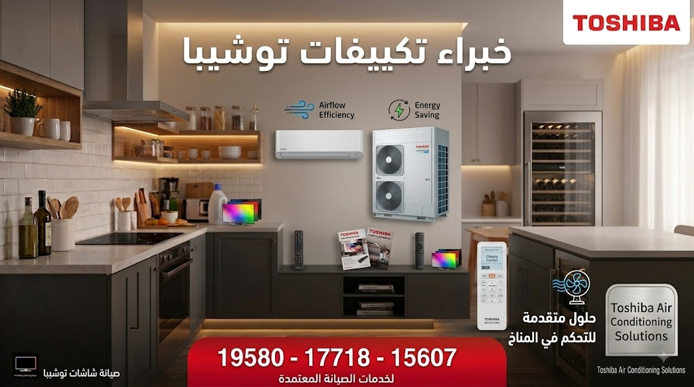

إذا كانت تواجهك مشكلات تتعلق بأجهزة توشيبا Toshiba الخاصة بك، يسعدنا التواصل مع الدعم الفني المتخصص لخدمة منتجات Toshiba المتوفر على مدار اليوم لخدمتك. نمتلك خبرة فريدة ومثالية لحماية منتجات توشيبا للثلاجات والغسالات والشاشات ومنع الإصلاحات الخاطئة وتجنب التوقف غير المتوقع لبعض الأجهزة.
نعمل دائماً على تقديم عمليات إصلاح وصيانة توشيبا بالطرق الصحيحة والفعالة للوصول إلى الأداء المثالي للثلاجات والغسالات والشاشات. نستخدم أحدث معدات استكشاف الأعطال وتصحيح الأخطاء لضمان إصلاحها بأعلى جودة واحترافية وبقطع الغيار الأصلية.
اطرح الأسئلة لموظفي خدمة العملاء أو اتصل بنا على أرقام صيانة توشيبا الموحدة لمعرفة المزايا الإضافية واستمتع بمركز خدمة أفضل في أي وقت.


دعنا نرحب بك في مركزنا المستقل لصيانة توشيبا Toshiba، حيث تجد لدينا عروض صيانة مجانية وكروت الخصومات الحصرية المتاحة لكافة العملاء.
نهدف دائماً لإرضاء العميل، لذا نقدم خدمة صيانة ممتازة لمنتجات Toshiba تشمل ثلاجات وغسالات وديب فريزر وشاشات توشيبا العربي.
تتميز مراكز الصيانة بتوفير مهندسين وفنيين على أعلى مستوى من الكفاءة والتدريب لحل معقد الأعطال الإلكترونية والميكانيكية.
نضمن لك استخدام قطع غيار توشيبا الأصلية المعتمدة بالكامل، مع تقديم ضمان معتمد على عملية الصيانة وقطع الغيار المستبدلة.
تنتشر سيارات الخدمة السريعة في جميع محافظات مصر لتغطي كافة المناطق وتقديم الصيانة المنزلية الفورية دون الحاجة لنقل الجهاز.
تواصل معنا الآن عبر الخطوط الساخنة المعلنة للحصول على معاينة فورية وخصومات تصل إلى 30% على الصيانة.

اعتماداً على الخبرات الممتدة لفريق صيانة توشيبا، فإن هدفنا الرئيسي هو تقديم خدمة صيانة سريعة ومضمونة لإعادة تشغيل أجهزتك بكفاءة المصنع.
بمجرد التواصل معنا يتم تحريك أقرب سيارة صيانة مجهزة بالقطع الأصلية ليصلك الفني المختص خلال 24 إلى 48 ساعة فقط.
يسعدنا مساعدتك عبر أرقام الخط الساخن 19580 أو 17718 أو 15607 للتغلب على كافة المشكلات التقنية والأعطال.
نغطي جميع أنحاء جمهورية مصر العربية بتوفير خدمات صيانة منزلية فورية لضمان وصول الخدمة لكل بيت مصري.
كيف يمكنني معرفة تكلفة صيانة جهاز توشيبا (Toshiba)؟
عند التحدث مع أحد ممثلي خدمة العملاء، سيُطلب منك توضيح موديل الجهاز ونوع المشكلة (مثلاً: ثلاجة، غسالة، شاشة)، وهل الجهاز ما زال داخل الضمان أم خارجه.
سيتم إفادتك بالتكلفة التقريبية للزيارة المنزلية وقطع الغيار المطلوبة قبل البدء في عملية الإصلاح.
تستغرق معظم عمليات الصيانة المنزلية لأجهزة توشيبا ما بين 30 إلى 60 دقيقة في حالة الأعطال العادية وتغيير القطع التالفة مباشرة بقطع أصلية.
يمكنك التواصل المباشر معنا من خلال الأرقام الموحدة: 19580 أو 17718 أو 15607 على مدار الأسبوع.
1. تسجيل البلاغ عبر الخط الساخن وتحديد الموعد المناسب.
2. زيارة الفني المختص وفحص الجهاز بأحدث أجهزة كشف الأعطال.
3. تركيب قطع الغيار الأصلية واختبار الجهاز أمام العميل.
4. تسليم شهادة ضمان معتمدة على الصيانة والقطع الجديدة.
فريق خدمة العملاء متواجد لخدمتك وتلقي بلاغات الأعطال والاستفسارات طوال أيام الأسبوع.